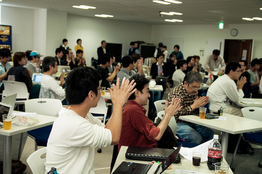
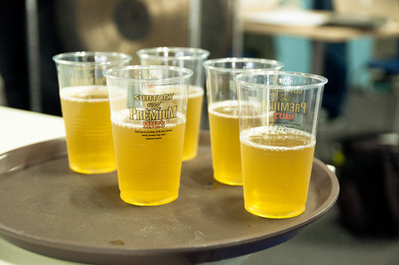
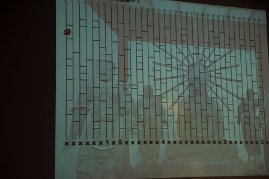

RegionalRubyKaigi レポート (26) TokyuRuby 会議 04
RegionalRubyKaigi レポート TokyuRuby 会議 04
開催概要
: 
- 開催日
- 2011-10-29 (土) 14:00 - 19:30 頃
- 開催場所
- 株式会社 VOYAGE GROUP 様 会議室
- 主催
- Tokyu.rb
- 参加者
- およそ 80 名
- 公式ページ
- http://regional.rubykaigi.org/tokyu04
- 公式ハッシュタグ
- #tqrk04
はじめに
TokyuRuby 会議 04 は、東京での 8 回目の RegionalRuby 会議として、2011 年 10 月 29 日に開催されました。本記事はその様子をレポートしたものです。
TokyuRuby 会議とは
TokyuRuby 会議は、Ruby に興味のあるエンジニアが集う Tokyu.rb が主催する LT 大会です。第一回からの特徴として、「お酒・食べ物持ち込みあり」「その場でのあみだくじで参加者から LT 発表者を抽出する」「基調講演は当日の投票で選ぶ」などがあります。
 前回に引き続き、今回もサントリー様に「ザ・プレミアムモルツを楽しむ会」を併設して頂けることとなり、ザ・プレミアムモルツの生および黒生が提供されました。
また会場も前回同様、VOYAGE GROUP 様が快く提供して下さいました。プロジェクターやスクリーンからドラ、ソフトドリンク、休憩場所など、必要なものが全て揃う、至れり尽くせりの会場でした。
前回に引き続き、今回もサントリー様に「ザ・プレミアムモルツを楽しむ会」を併設して頂けることとなり、ザ・プレミアムモルツの生および黒生が提供されました。
また会場も前回同様、VOYAGE GROUP 様が快く提供して下さいました。プロジェクターやスクリーンからドラ、ソフトドリンク、休憩場所など、必要なものが全て揃う、至れり尽くせりの会場でした。
開場〜前半戦 LT
前半戦 LT 一覧
- ビールスポンサー : サントリー様 ザ・プレミアムモルツの美味しさの秘密
- 会場スポンサー : VOYAGE GROUP 様 VOYAGE GROUP からの大切なお知らせ
- tatsuoSakurai : Rubyと楽しい開発
- sasata299 : からあげとビーチと私
- @kuko : Ruby 女性技術者倍増計画
- Paul McMahon : galakei : スマホの時代のガラケープラグイン
- emasaka : メタメタプログラミング Ruby
- 卜部昌平 : 5 分間でだいたい分かる正規表現とは何か
- do_aki : PHPer が Ruby を変えてみる (仮)
: 
前回同様、開場と同時にザ・プレミアムモルツがウェルカムドリンクとして配られました。 開始時間の 10 分前位には席が参加者でほぼ満たされ、そしてその参加者の方々の大半は既にビールを伴った時間を過ごし始めておりました。 会場説明などが終わった後、ライトニングトークの前半戦が開始され、今回もサントリー様の「ザ・プレミアムモルツの美味しさの秘密」をトップバッターとして、前半戦 LT が開始されました。
お酒で程よくリラックスされている事もあるせいか、今回も発表の進行は大変スムーズで、ライトニングトークであるにも関わらずドラで時間切れとなる方がとても少なく、前半から既に時間が余り始めるという状況でした。
発表内容も、Ruby を用いて作られたプロダクトの事例紹介から、マニアックな使い方、それにエンジニアとしてのアピール方法や採用戦略まで盛りだくさんでした。
抽選 LT
前半戦 LT 終了後の休憩時間中に、恒例の抽選 LT 発表者の抽選を行いました。 抽選 LT とはその場にいらっしゃる方々の中から、抽選で LT 発表者を決めさせて頂き、10 分程度の準備時間の後に 3 分間の制限の中で LT を実際にして頂く、というものです。資料を用意する時間としては短いため、「手ぶらで登壇、ひたすら語る」スタイルでも問題ない、という事になっております。
 抽選は毎回、スタッフ kishima 氏の自作プログラムにより実行されます。回を重ねる毎にパワーアップしていくアミダくじプログラムですが、今回は動きも滑らか、ビジュアル的にも背後に阿弥陀如来が控えるというハイクォリティさを見せつけておりました。 そして選ばれた 5 名の方の LT ですが、今回の抽選 LT でも、プレゼン資料を既にお持ちの方がいらっしゃいました。その場で作った方だけでなく、抽選に当たることに備えて既に資料をして作ってきてくださる方や、LT ネタの一つ二つは常に携帯しているのような方もいらっしゃったようです。
後半戦 LT
後半選 LT 一覧
- ayumin : Ruby コミッター業
- 駒形真幸 : クラウド向け CMS Lokka
- おおかゆか : サービス志向 (≠指向) エンジニアの生存戦略
- いがいが : 大規模タイマーを支える技術
- トゥイー (伊藤豊) : 双極性障害 (躁鬱病) とRuby
- tsuyoshikawa : The Rubyist
- Uchio Kondo (@udzura) : Padrino 黒ミサ in 神泉
- kwappa : 肉と Ruby とわたし
- こしば としあき : 「闇からの伝言」
- takai : なぜベストを尽くさないのか ―― 私がクックパッドへ転職した理由
- nay3 (大場寧子) : 全ての P… を生まれる前に消し去りたい。
: 
後半になってまいりますと、発表者の方もだいぶ酔いが回っており、発表も更にスムーズになりました。また発表者・参加者含めリラックス度が増し、心理的にも物理的にも互いの距離感が縮まっていったような感じを受けました。 なかなかこの雰囲気は説明しにくいのですが、参加して下さった方々の tweet が Togetter に纏められておりますので、参考までに URL を記載させて頂きます。 http://togetter.com/li/197803
投票結果
飯部門
 まず飯部門ですが、あんこう鍋をはじめとする様々な手料理を持ち込んだ @2celeb さんがダントツの TOP でした。毎回クオリティの高い食べ物を手作りで持ってきて下さる有難い方で、2 連覇中です。
まず飯部門ですが、あんこう鍋をはじめとする様々な手料理を持ち込んだ @2celeb さんがダントツの TOP でした。毎回クオリティの高い食べ物を手作りで持ってきて下さる有難い方で、2 連覇中です。
LT 部門
: 
そして LT 部門ですが、こちらも前回に引き続き大場寧子さんの 2 連覇となりました。会場に居る Rubyist が経験しているであろう P… についてのネタを中心に、貫禄のトリ LT での最多得票です。 最多得票の方々には、参加者持ち寄りの商品および、tmix 様よりオリジナルカラーの T シャツが進呈されました。
おわりに
 「敷居の低い LT 大会」であることを目指して開催している TokyuRuby 会議ですが、盛り上がる会場を見て、今回もやってよかったなぁとスタッフ一同安堵はしています。お酒は良くも悪くも皆をリラックスさせ、普段なかなか話せない突っ込んだ話をする機会も生まれているように感じられました。
「敷居の低い LT 大会」であることを目指して開催している TokyuRuby 会議ですが、盛り上がる会場を見て、今回もやってよかったなぁとスタッフ一同安堵はしています。お酒は良くも悪くも皆をリラックスさせ、普段なかなか話せない突っ込んだ話をする機会も生まれているように感じられました。
ただ今回初参加の方の中には「こんなくだけた雰囲気なのか」と面食らった方もいらっしゃると聞いております。 今回開催された TokyuRuby 会議 04 にて、東京で開催される RegionalRubyKaigi のうち半数が TokyuRuby 会議である事となり、更に第 5 回目の開催も計画しておりますので、半数以上が「くだけた雰囲気」という事になってしまいます。 副実行委員長の小川さんとも話をしたのですが、硬軟の RegionalRubyKaigi にも是非参加したい！と思う方は私たちも含め多いようですので、今年も別のスタイルの RegionalRubyKaigi が東京で開催される事を楽しみに、第 5 回の準備を進めたいと思っております。
参考資料：会場の様子 ※公開に問題があるようでしたらご連絡下さい。 @koichiroo さん撮影 http://www.flickr.com/photos/koichiroo/sets/72157628059770749/
Tokyu.rb とは
2 ヶ月に 1 度位、目黒でしゃぶしゃぶかすきやきを食べる Rubyist の集団。お酒持ち込みのハッカソンも開催予定。 東急沿線でなくとも乗り入れ線沿線や、職場が沿線だったりする方も、全く関係が無い方も誰でも参加可能です。お気軽にお越しください。 http://qwik.jp/tokyurb/
著者について
河野 誠。Tokyu.rb 主催者の 1 人。しゃぶしゃぶ・すきやき手配担当。TokyuRuby 会議 01 〜 04 実行委員長。普段は Rails でサービスを作る仕事をしている。